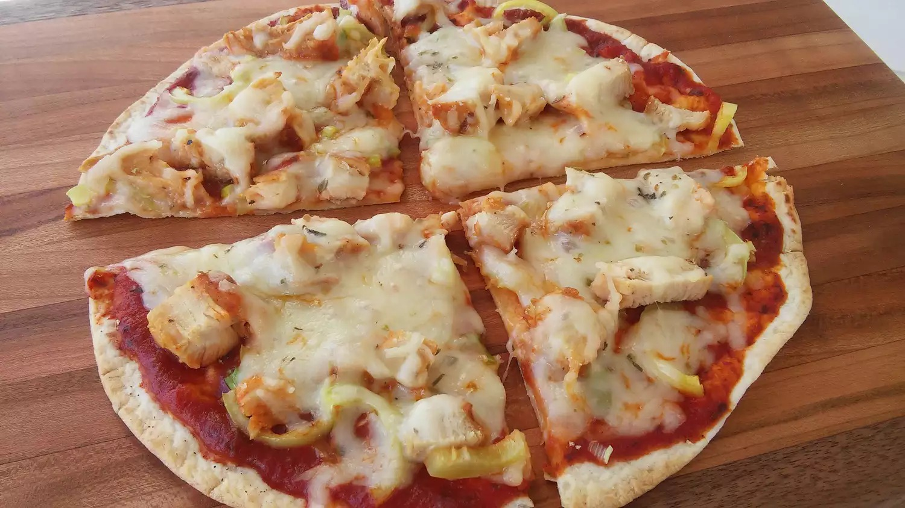

Creamy Garlic Pasta Recipe

Description
As far as creamy pasta recipes, this is the best I have ever had. Add prawns and/or scallops to make an amazing seafood Alfredo.
Ingredients
- 1 (8 inch) soft flour tortilla
- 1 teaspoon olive oil
- 1 pinch garlic powder
- salt and ground black pepper to taste
- 3 tablespoons tomato sauce
<1i>1 cooked chicken breast, sliced
- <½ green bell pepper, chopped
- <2 green onions, finely chopped
- <⅓ cup shredded mozzarella cheese
- 1 pinch dried oregano
Steps
- Preheat the oven to 400 degrees F (200 degrees C).
- Place tortilla on a baking sheet.
- Brush with olive oil; sprinkle garlic powder, salt, and pepper on top.
- Bake in the preheated oven until golden, 3 to 5 minutes.
- Remove from the oven and spread tomato sauce on top; arrange chicken breast, green bell pepper, and green onions over tomato sauce.
- Sprinkle with mozzarella cheese.
- Bake in the preheated oven until cheese is melted, about 5 minutes.
- Sprinkle oregano over cheese.
- Slice pizza into wedges using a pizza cutter.